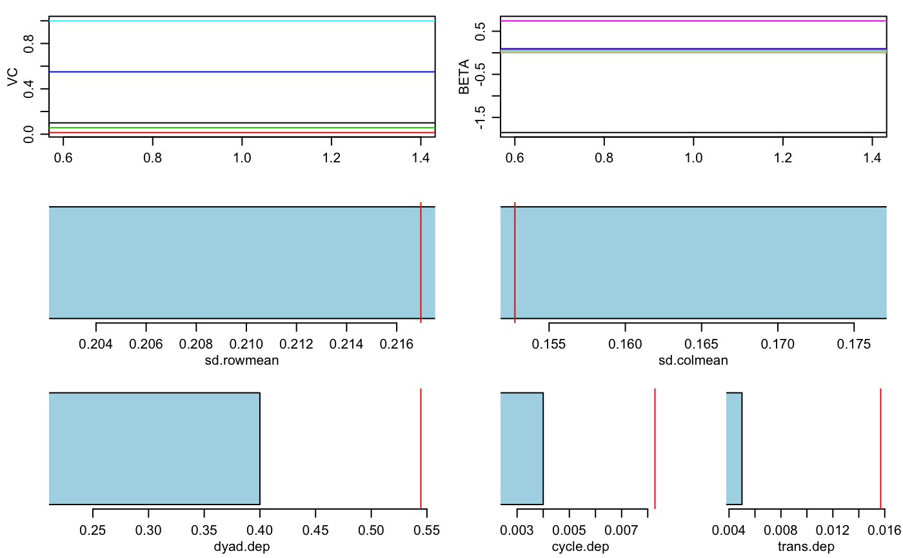
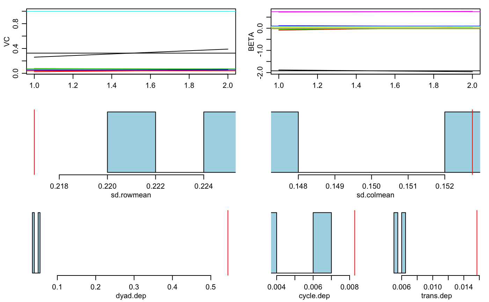
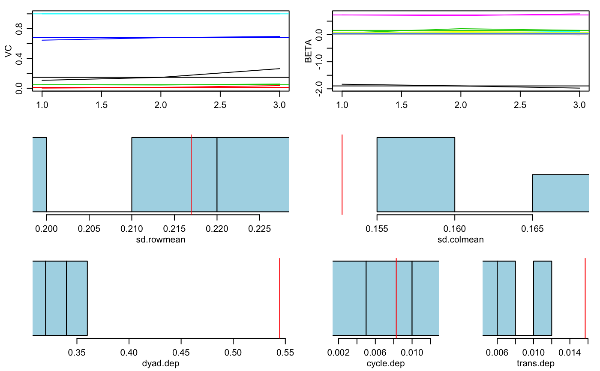
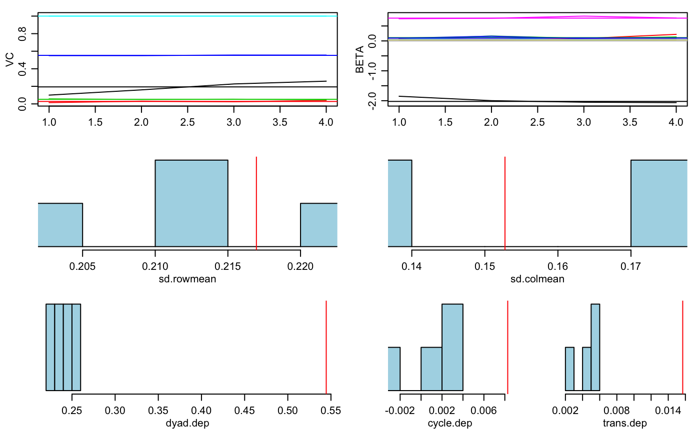

Additive and Multiplicative Effects Models for Networks and Relational Data
Source:R/amen-package.R
amen-package.RdAnalysis of network and relational data using additive and multiplicative effects (AME) models. The basic model includes regression terms, the covariance structure of the social relations model (Warner, Kenny and Stoto (1979), Wong (1982)), and multiplicative factor effects (Hoff(2009)). Four different link functions accommodate different relational data structures, including binary/network data (bin), normal relational data (nrm), ordinal relational data (ord) and data from fixed-rank nomination schemes (frn). Several of these link functions are discussed in Hoff, Fosdick, Volfovsky and Stovel (2013). Development of this software was supported in part by NICHD grant R01HD067509.
Details
| Package: | amen |
| Type: | Package |
| Version: | 1.4.2 |
| Date: | 2018-06-08 |
| License: | GPL-3 |
| Package: |
Examples
#> 20 pct burnin complete #> 40 pct burnin complete #> 60 pct burnin complete #> 80 pct burnin complete #> 100 pct burnin complete #> 6 -1.83 0.06 0.07 0.04 0.05 0.73 0.08 0.02 : 0.11 0 0.05 0.65 1#> 7 -1.86 0.08 0.14 0.05 0.06 0.72 0.09 0.04 : 0.13 0.01 0.05 0.66 1#> 8 -1.9 0.06 0.15 0.05 0.08 0.74 0.09 0.02 : 0.17 0.02 0.05 0.67 1#> 9 -1.93 0.05 0.15 0.03 0.08 0.76 0.1 0.02 : 0.18 0.02 0.05 0.68 1 #> 4 4 4 4 4 4 4 4#> 10 -1.96 0.06 0.16 0.04 0.07 0.79 0.1 0.03 : 0.19 0.02 0.05 0.69 1 #> 5 5 5 5 5 5 5 5summary(fit)#> #> Regression coefficients: #> pmean psd z-stat p-val #> intercept.dyad -1.961 0.102 -19.186 0.000 #> rgpa.dyad 0.058 0.032 1.793 0.073 #> rsmoke.dyad 0.159 0.059 2.714 0.007 #> cgpa.dyad 0.039 0.028 1.430 0.153 #> csmoke.dyad 0.070 0.032 2.170 0.030 #> igrade.dyad 0.786 0.076 10.303 0.000 #> igpa.dyad 0.101 0.021 4.820 0.000 #> ismoke.dyad 0.026 0.021 1.230 0.219 #> #> Variance parameters: #> pmean psd #> va 0.194 0.070 #> cab 0.023 0.020 #> vb 0.051 0.010 #> rho 0.686 0.025 #> ve 1.000 0.000plot(fit)